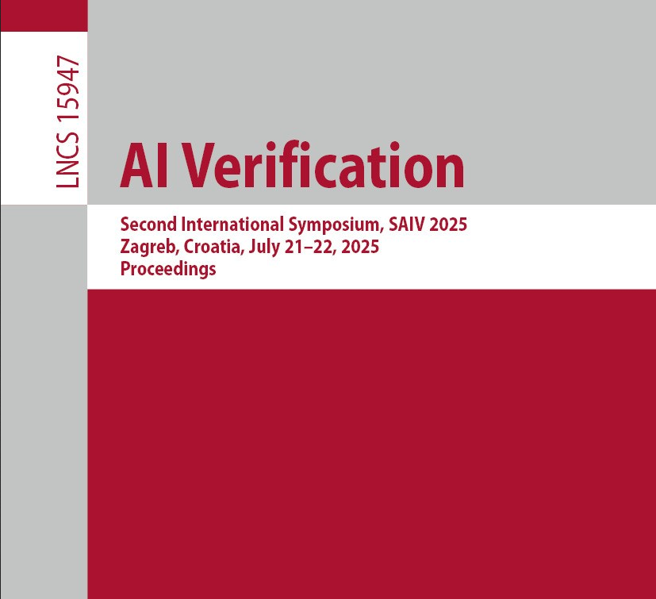
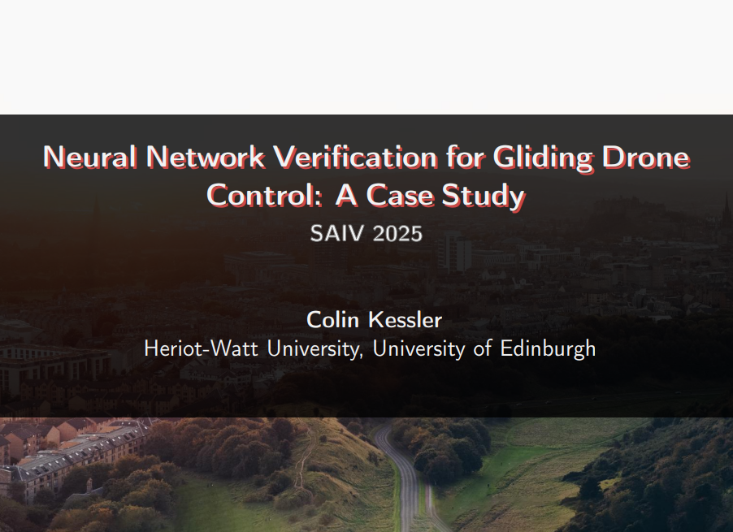

Journal of the Royal Society Interface
2026
Welcome to my site! I'm a third year PhD student at the Edinburgh Centre for Robotics, working in the LAIV and VOILab under Professors Ekaterina Komendantskaya and Ignazio Maria Viola. My reseach is on the design, simulation, and control of bio-inspired microgliders, specifically on investigating robustness and safety properties of neural network controllers.
I have a degree in Mechanical Engineering from the University of Edinburgh, and previously worked as a software engineering intern at Altair Engineering and WMG Warwick.
I do photography as a hobby; see my site and instagram.
Publications
(Manuscript under review) The flight of Alsomitra macrocarpa ...
Conference Proceedings
Neural Network Verification for Gliding Drone Control: A Case Study

Colin Kessler, Ekaterina Komendantskaya, Marco Casadio, Ignazio Maria Viola, Thomas Flinkow, Albaraa Ammar Othman, Alistair Malhotra, Robbie McPherson.
Symposium on AI Verification
Conference Proceedings, 28/10/2025
Talks
Neural Network Verification for Gliding Drone Control: A Case Study

Symposium on AI Verification
Zagreb, 21/7/2025